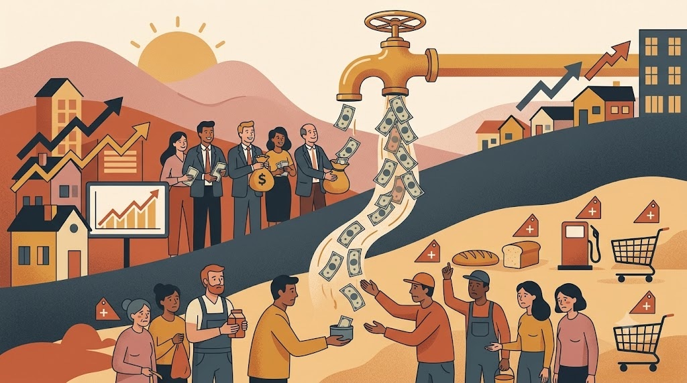

성실하게 일하는데 월급은 제자리고, 집값만 혼자 달아난다. 다들 한 번쯤은 이런 생각 해봤을 거다. 이게 정말 내가 덜 노력해서 그런 걸까?
1. 새 돈은 모두에게 동시에 도착하지 않는다
아일랜드 출신 경제학자 리샤르 캉티용(Richard Cantillon)은 새 돈이 경제에 들어오는 길을 따져 본 초기 경제학자로 꼽힌다. 그의 『상업 일반의 본성에 관한 시론』은 1730년경 완성돼 원고로 돌다가, 그가 죽은 뒤인 1755년에야 책으로 나왔다(위키백과).
핵심은 단순하다. 새로 생긴 돈은 전체에 고르게 퍼지지 않고 특정한 지점으로 먼저 들어가고, 어디로 먼저 들어가느냐가 누가 이득을 보느냐를 정한다. 캉티용은 새 은이 광산 주인에게 먼저 들어오는 경우를 예로 들었다. 광산 주인이 소고기와 포도주를 더 사들이면 그 물건값이 오르고, 빵과 맥주로 살아가는 농민은 소득은 그대로인데 생활비만 오른다(Mises Wire, 2022).
같은 돈이어도 먼저 쓰는 사람은 물가가 오르기 전 가격으로 사고, 나중에 받는 사람은 오른 가격으로 산다. 이 시차가 캉티용 효과다. 말은 거창한데, 결국 줄 서는 순서 문제다.
2. 오늘 새 돈이 들어가는 길
캉티용이 말한 건 은광에서 나온 은이었다. 요즘은 중앙은행이 돈을 만든다. 그렇다고 중앙은행이 우리 통장에 현금을 꽂아주는 건 아니다. 대표적인 방법이 양적완화, 쉽게 말해 중앙은행이 새로 만든 지급준비금(시중은행이 중앙은행에 맡겨 두는 예치금)으로 채권 같은 자산을 사들이는 거다. 그 채권을 판 쪽의 손에 새 돈이 제일 먼저 들어간다.
영국 중앙은행은 2012년에 이 정책의 분배 효과를 직접 분석해 발표했다. 의회 재무위원회가 정책의 비용과 편익을 더 설명하라고 요구한 데 대한 답이었다. 보고서에 따르면 영란은행의 자산 매입은 국채 가격만이 아니라 주식을 포함한 여러 자산의 가격을 끌어올렸고, 주식 가격을 올린 정도가 국채 못지않다는 게 은행 스스로의 평가였다. 2012년 5월까지 약 3,250억 파운드를 사들였고, 그 결과 가계 금융자산이 6,000억 파운드가 조금 넘게 늘었다고 추정했다. 문제는 그 혜택이 금융자산을 많이 가진 가구에 돌아갈 수밖에 없다는 점이다. 보고서는 연금 밖 금융자산의 40%를 상위 5% 가구가 갖고 있다고 적었다(영란은행 계간 보고서, 2012).
미국도 구조는 비슷하다. 연방준비제도가 가계 자산을 분포별로 집계한 통계를 보면, 자산 하위 50% 가구가 가진 기업 주식과 뮤추얼펀드의 비중은 2026년 2분기 기준 0.6%다(FRED, 연준 분포 금융계정). 자산 가격이 오르는 정책의 이득은 자산이 있는 쪽에 쌓인다.
3. 숫자로 본 격차와 통화량
세계불평등연구소(World Inequality Lab)는 『세계불평등보고서 2026』을 내고, 세계 인구의 상위 10%가 전 세계 부의 4분의 3(75%)을, 하위 50%는 2%를 갖고 있다고 밝혔다. 소득에서도 상위 10%가 나머지 90%를 합친 것보다 더 많이 번다고 했다(World Inequality Report 2026). 다만 이 숫자는 격차가 얼마나 큰지를 보여줄 뿐, 원인이 통화 제도에 있다는 말까지 해주지는 않는다. 이 보고서를 만든 곳이 세계불평등연구소라는 점은 보고서 공식 사이트에서 확인된다(소개 페이지).
그럼 돈의 양은 얼마나 늘었을까. 미국 연준의 M2(현금과 예금 등 넓은 의미의 통화량)는 2017년 1월 약 13조 3천억 달러에서 2025년 12월 약 22조 4천억 달러로 늘었다. 약 1.7배다(FRED, M2). 한국은행 통계로 2017년 M2 평균 잔액은 약 2,471조 원이었다(토요경제 보도, 2018). 2017년 평균 잔액 중 가계와 비영리단체 몫은 1,320조 원, 기업 몫은 638조 원이었다. 2025년 12월에는 계절 조정 기준 약 4,080조 원이다(아시아경제 보도, 2026). 다만 한국은행이 최근 수익증권을 뺀 새 M2 기준을 쓰고 있어서 두 숫자를 곧바로 비교하는 건 정확하지 않다. 대략 1.6배 이상으로 늘었다고 읽는 게 안전하다.
여기서 짚고 넘어갈 게 있다. 통화량이 늘어난 만큼 경제도 커졌으니, 통화량 증가가 곧 자산 격차의 원인이라고 말할 수는 없다. 위 숫자는 두 변화가 같은 시기에 있었다는 것까지만 보여준다.
4. 빚과 물가지표가 만드는 간격
돈의 가치가 떨어지면 이미 진 빚의 실질 부담은 줄어든다. 계산은 단순하다. 100억 원을 빌려 부동산을 샀는데 물가가 두 배가 되면, 갚을 명목 금액은 그대로니까 실질적으로는 50억 원어치 빚이 된다. 자산 가격이 물가를 따라 올랐다면 자산은 지키면서 빚만 줄어든 셈이다. 월급 말고는 자산도 신용도 없는 사람은 이 계산판에 끼지도 못한다.
소비자물가지수도 이 간격을 잘 보여주지 못한다. 한국의 소비자물가지수는 자기 집에 사는 비용(자가주거비)을 주지표에 넣지 않고, 임차 주거비도 10% 미만만 반영한다. 미국, 일본, 캐나다, 호주 같은 주요국은 자가주거비를 포함한다. 통계청은 2026년 12월 가중치 개편 때 이를 주지표에 포함할지 검토하고 있다(머니투데이, 2025). 집값이 크게 올라도 공식 물가에는 거의 잡히지 않으니, 체감과 통계가 따로 노는 거다.
사람마다 겪는 물가가 다르다는 연구도 있다. 미국 가계를 분석한 한 논문은 저소득과 중간소득 가구가 더 높은 중위 인플레이션을 겪는 경향이 있다고 보고했다. 에너지, 휘발유, 수도 같은 필수 지출 비중이 크기 때문이다. 다만 같은 논문은 이런 인플레이션 차이를 반영하면 통화정책이 지출 불평등에 미치는 영향이 20~30% 더 작게 나온다고도 했다(International Journal of Central Banking, 2025). 사람마다 다른 물가가 격차를 키울 수도, 일부 가릴 수도 있다는 얘기다.
5. 정리
결국 중앙은행은 과거부터 현재까지 계속 돈을 풀어왔고, 그건 '가까운' 자들의 주머니로 우선적으로 들어갔다. 무서운 사실은 앞으로도 반복되리라는 것.
그리고 지금까지처럼 물가 상승률을 속일 거다.
돈이 어디서 만들어져 어디로 먼저 흘러가는지 봐야 한다. 그 줄에서 월급은 맨 뒤에 선다는 거다. 비트코인은 발행 규칙이 공개돼 있고 총량이 2,100만 개로 정해진 돈이다(위키백과, Bitcoin). 즉 정부가 마음대로 휘두를 수 없다.
무엇을 비축할지는, 각자 선택하자.
참고 자료
- Richard Cantillon (위키백과)
- Cantillon Effects: Why Inflation Helps Some and Hurts Others (Mises Institute, 2022)
- The distributional effects of asset purchases (Bank of England Quarterly Bulletin, 2012)
- Share of Corporate Equities and Mutual Fund Shares Held by the Bottom 50% (FRED, 미 연준 이사회)
- World Inequality Report 2026 — Executive Summary (World Inequality Lab)
- World Inequality Report 2026 — About (World Inequality Lab)
- M2 (M2SL) (FRED, 미 연준 이사회)
- 작년 시중통화량 129조원 불어난 2471조원 기록 (토요경제, 2018)
- 한은, 2025년 12월 통화 및 유동성 (아시아경제, 2026)
- 韓 물가지표에 자가주거비 없는 이유는 (머니투데이, 2025)
- Monetary Policy Shocks and Inflation Inequality (International Journal of Central Banking, 2025)
- Bitcoin (위키백과)